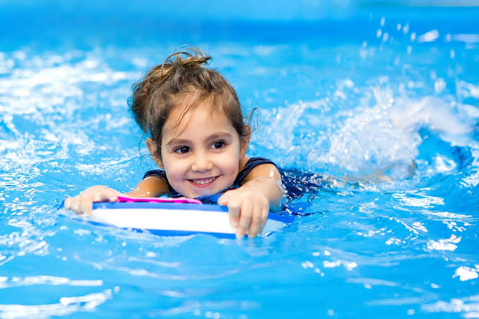
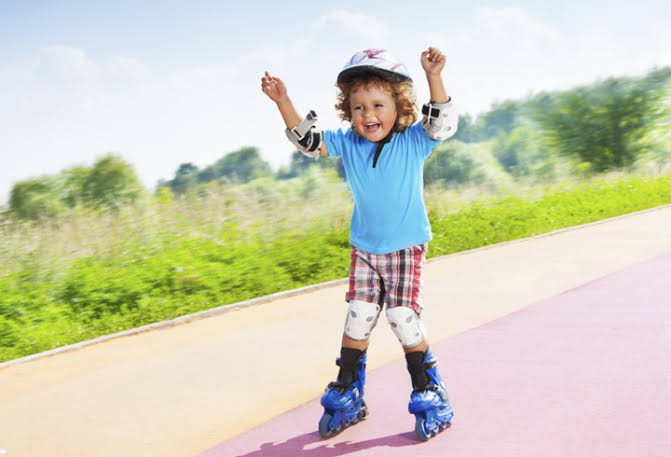
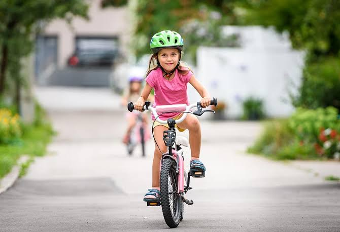
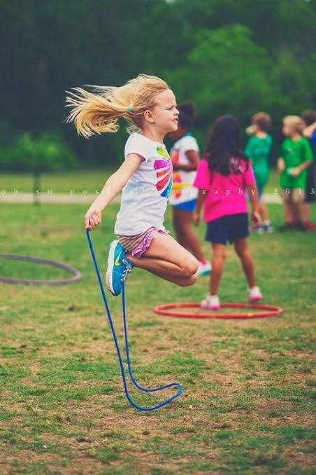
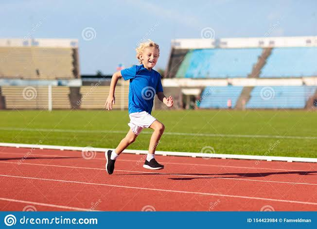
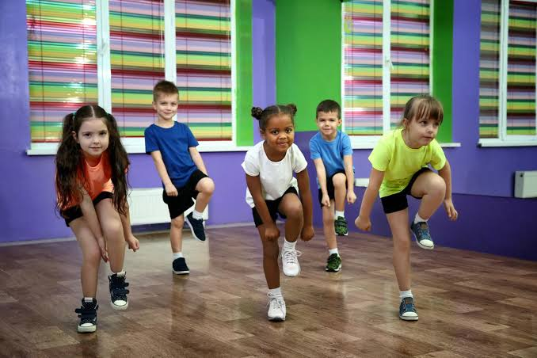
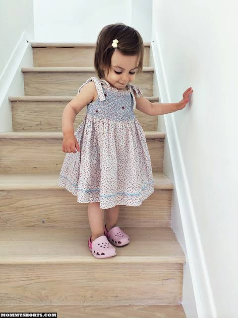
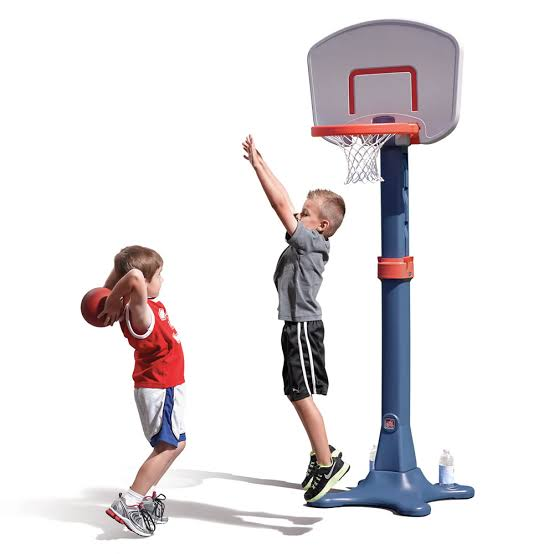
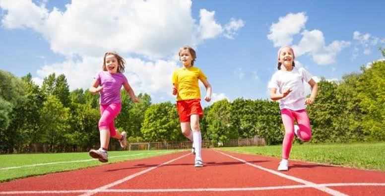

Kid Exercise
Swimming can aptly be termed as the most loved physical exercise for kids. This water-based fun exercise should be
carried out at least three to four hours after meals. Here are some of the benefits of swimming for young kids.
Benefits
- It is a good breathing exercise and also helps the kids in keeping off obesity.
- It is good for building endurance and better muscle strength.
- It is also beneficial for improving digestion.

Kids love to move around on wheels and here are some of the benefits of skating for your little champs.
Benefits
- It helps in strengthening thigh, shin and hip muscles of the kids.
- The added stress to the thighs, shins, and hips helps in making these muscles stronger.
- Regular practice helps in building focus and stability.
- It is a good aerobic exercise for kids and helps in keeping the body fit and healthy.

Cycling is not only one of the best ways of commuting but it is a great physical exercise for kids. Here are some of the many
benefits of cycling.
Benefits
- It helps in releasing the feel-good hormone in the body and keeps your kid in high spirits.
- It is a great way of staying fit and keeping off the extra weight.
- It helps in building better thigh, shin, and hip muscles.
- Intense cycling sessions help in lowering cholesterol and blood pressure.
- It helps in improving blood circulation and thus improves brain and heart health.
- Cycling helps in keeping blood sugar levels under control and thus extremely beneficial for kids suffering from diabetes.

Kids enjoy this form of hippy-hoppity fun exercise. Kids may take some time to master the correct technique
of skipping and once they do, they will have loads of fun. Here are some benefits of skipping
Benefits
- Repetitive jumping movements help in strengthening calf, thigh and leg muscles.
- Apart from a great exercise, skipping is a good fun activity for your kids.
- Children who suffer from ADHD or Attention Deficit Hyperactivity Disorder can benefit immensely from this form of exercise.
- It also aids in channelizing the kid’s energy in a right manner.

You can engage your kid to go jogging with you every day. This is one of the easiest and best forms of exercising. Here are some
jogging benefits for your little one.
Benefits
- It helps in developing better immunity and helps your kid fight various illnesses.
- It helps in elevating your kid’s mood..
- It is beneficial for your kid’s heart and brain health.

Dancing or dance exercise is a great way of keeping your kid hale and hearty. Here are some of the benefits of dancing for the kids
Benefits
- It is a total body work out and also a fun way of indulging in an indoor exercise.
- The dance movements require precision and thus it helps in improving concentration.
- It is a great way of losing body fat.
- It is a fun activity that all kids love to engage in.

7.Going Up And Down The Stairs
As easy as it may sound but going up and down the stairs is a great work out of kids. You can
turn it into an interesting game and involve your kid’s friends too. Here are some benefits of climbing stairs.
Benefits
- It is a great breathing exercise and also helps in building stamina in kids.
- It is an effective way of losing some extra body weight.
- It helps in improving bone and heart health of young children.

You can take your kid to a basketball court and engage in this ball game. Though younger children may
struggle in handling the ball it is a great way of doing a physical workout even for younger kids. Here are some
of the benefits of playing basketball.
Benefits
- Throwing the ball helps in improving upper arm strength.
- It helps in improving stamina and endurance in children.
- It helps in keeping the body weight in check and also keeps the body toned.

There are many games that involve running and it is a great way of engaging kids in some outdoor activities. Here are some running benefits for children
Benefits
- It is a great way of burning excess body fat and to stay fit.
- It helps in toning the muscles.
- It helps in improving heart health.

Racquet games are good for young children and kids enjoy them too. Here are some benefits of playing badminton for the kids.
Benefits
- It helps in muscle development in kids.
- It is a great way of improving hand-eye coordination in children.
- It is a great exercise for the overall movement of the body